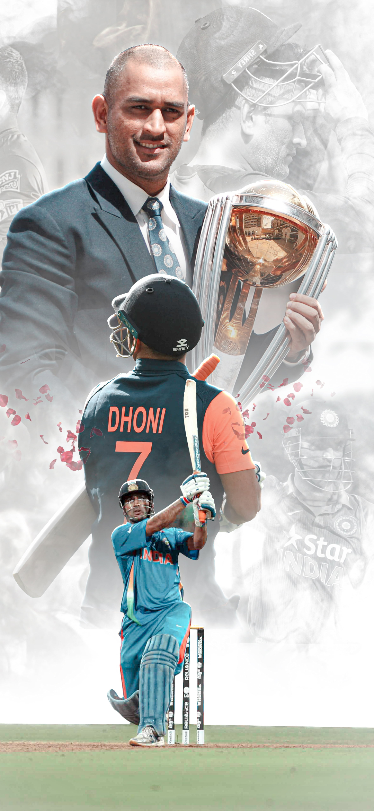

MS DHONI

MAHENDRA SINGH DHONI
Former Indian Captain
Captain Cool
wicketkeeper Batter
MS Dhoni was born on July 7, 1981, in Ranchi, Bihar (present-day Jharkhand) in a Hindu Rajput family to Pan Singh and Devki Devi. His paternal village is in the Lamgara block in Almora, Uttarakhand. His father, Pan Singh, moved from Uttarakhand to Ranchi and worked in junior management positions in MECON. Dhoni has a sister and a brother-- Jayanti Gupta (sister) and Narendra Singh Dhoni (Brother).
Under his captaincy, Indian team won major tournaments in all 3 formats: the No.1 Test ranking for 18 months (2009-2011), the ODI World Cup in 2011, Champions Trophy in 2013 and the Twenty20 World Cup in 2007.
1- In 2018, he received India's third-highest civilian award- Padma Bhushan.
2- In 2009, he received India's fourth-highest civilian award-- Padma Shri.
3- For 2007-2008, he received India's highest honour given for achievement in sports-- Rajiv Gandhi Khel Ratna.
4- In 2008, 2009, he was awarded the ICC ODI Player of the Year.
5- In 2006, 2008, 2009, 2010, 2011, 2012, 2013, 2014; he was awarded the ICC Wolrd ODI XI.
6- In 2009, 2010 and 2013; he was awarded the ICC World Test XI.
7- In 2011, he was awarded Castrol Indian Cricketer of the Year.
8- In 2006, he received the title of MTV Youth Icon of the Year.
9- In 2013, he received the LG People's Choice Award.
10- In August 2011, he received an honorary doctorate from De Montfort University.
In 2007, he was appointed the captain of Twenty-20 squad for the World Championship in South Africa. Watching his performance in just a few of the T-20 World Cup matches in South Africa, the selectors handed the reigns of one-day team to him after Rahul Dr avid decided to step down as captain. Under his captaincy, India won the 2011 World Cup. In the final against Sri Lanka, he promoted himself up the order, knocking 91 off 79 balls, with a six off the last ball.
MS DHONI 2011 WORLDCUP LAST BALL SIX
Dhoni_last_ball_six
Dhoni car collections
| CAR |
MODEL |
PRICE(INR Lakhs) |
| Hummer |
H2 |
75 |
Audi |
Q7 |
65 |
| Mistubishi |
Pajero SFX |
22 |
Mahindra |
Scorpio |
10 |
Ferrai |
599 GTO |
139 |
Nissan |
Jonga |
6 |
MS Dhoni Endorsements
order list
- Unacademy
- starsorts2022
- cars24
- redbus
- indigopaints
- colgate
- lava
- oreo
- cello
- pepsico
unorder list
- Unacademy
- starsorts2022
- cars24
- redbus
- indigopaints
- colgate
- lava
- oreo
- cello
- pepsico